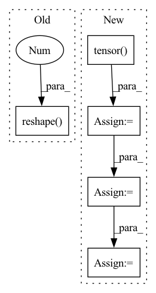

Pattern ID :5305

Before Change
// 因为是补齐了的，所以需要找到真正的 score
for i in range(score.shape[0]):
if i == 0:
true_scores = score[i][loc_len[i] - 1].reshape(1, -1)
else:
true_scores = torch.cat(
(true_scores, score[i][loc_len[i] - 1].reshape(1, -1)), 0)
return true_scores
After Change
out = torch.cat((hidden_state, context), 2)
// 因为是补齐了的，所以需要找到真正的 out
origin_len = batch.get_origin_len("current_loc")
final_out_index = torch.tensor(origin_len) - 1
final_out_index = final_out_index.reshape(final_out_index.shape[0], 1, -1)
final_out_index = final_out_index.repeat(1, 1, 2*self.hidden_size).to(self.device)
out = torch.gather(out, 1, final_out_index).squeeze(1) // batch_size * (2*hidden_size)
out = self.dropout(out)
y = self.fc_final(out) // batch_size * loc_size
score = F.log_softmax(y, dim=1)
return score
def predict(self, batch):
In pattern: SUPERPATTERN
Frequency: 3
Non-data size: 5
Instances
Fragment ID: 19006755
Project Name: libcity/bigscity-libcity
Commit Name: ec61c9cd984d1c86ee715380ed3b65b4222c8d1f
Time: 2021-05-06
Author: 33283819+WenMellors@users.noreply.github.com
File Name: trafficdl/model/trajectory_loc_prediction/DeepMove.py
M Class Name: DeepMove
N Class Name: DeepMove
M Method Name: forward(2)
N Method Name: forward(2)
M Parent Class: AbstractModel
N Parent Class: AbstractModel
M File Name: trafficdl/model/trajectory_loc_prediction/DeepMove.py
N File Name: trafficdl/model/trajectory_loc_prediction/DeepMove.py
M Start Line: 122
M End Line: 175
N Start Line: 152
N End Line: 163
'>
Before Change
true_scores = score[i][loc_len[i] - 1].reshape(1, -1)
else:
true_scores = torch.cat(
(true_scores, score[i][loc_len[i] - 1].reshape(1, -1)), 0)
return true_scores
def predict(self, batch):
After Change
out, out_len = pad_packed_sequence(out, batch_first=True)
// out = out.permute(1, 0, 2)
origin_len = batch.get_origin_len("current_loc")
final_out_index = torch.tensor(origin_len) - 1
final_out_index = final_out_index.reshape(final_out_index.shape[0], 1, -1)
final_out_index = final_out_index.repeat(1, 1, self.hidden_size).to(self.device)
out = torch.gather(out, 1, final_out_index).squeeze(1) // batch_size * hidden_size
out = F.selu(out)
out = self.dropout(out)
'>
Fragment ID: 19006774
Project Name: libcity/bigscity-libcity
Commit Name: ec61c9cd984d1c86ee715380ed3b65b4222c8d1f
Time: 2021-05-06
Author: 33283819+WenMellors@users.noreply.github.com
File Name: trafficdl/model/trajectory_loc_prediction/RNN.py
M Class Name: RNN
N Class Name: RNN
M Method Name: forward(2)
N Method Name: forward(2)
M Parent Class: AbstractModel
N Parent Class: AbstractModel
M File Name: trafficdl/model/trajectory_loc_prediction/RNN.py
N File Name: trafficdl/model/trajectory_loc_prediction/RNN.py
M Start Line: 87
M End Line: 97
N Start Line: 84
N End Line: 94
'>
Before Change
gt_units = gt_action.units.long()
batch_size = gt_units.shape[0]
select_size = gt_units.shape[1]
gt_units = gt_units.reshape(-1, gt_units.shape[-1])
print("gt_units.shape", gt_units.shape) if debug else None
gt_units = torch.nonzero(gt_units, as_tuple=True)[-1]
After Change
j = gt_select_units_num[i]
if j < select_size:
nums = min(units_size - 1, entity_nums[i].item())
nums = torch.tensor(nums, dtype=entity_nums.dtype, device=entity_nums.device)
gt_units[i, j] = L.tensor_one_hot(nums, units_size).long()
gt_units = gt_units.reshape(-1, units_size)
print("gt_units.shape", gt_units.shape) if debug else None
gt_units = torch.nonzero(gt_units, as_tuple=True)[-1]
'>
Fragment ID: 19006934
Project Name: liuruoze/mini-alphastar
Commit Name: dd339f69b42df0e4e42efc60a2473475ade3c9c5
Time: 2021-12-13
Author: liuruoze@163.com
File Name: alphastarmini/core/arch/arch_model.py
M Class Name: ArchModel
N Class Name: ArchModel
M Method Name: sl_forward(9)
N Method Name: sl_forward(9)
M Parent Class: nn.Module
N Parent Class: nn.Module
M File Name: alphastarmini/core/arch/arch_model.py
N File Name: alphastarmini/core/arch/arch_model.py
M Start Line: 182
M End Line: 185
N Start Line: 167
N End Line: 233